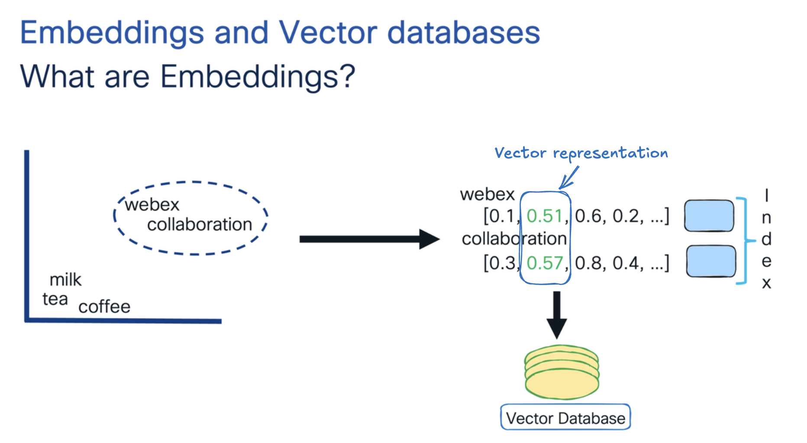
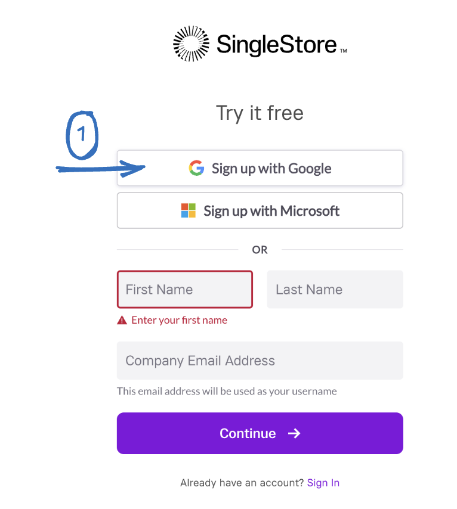
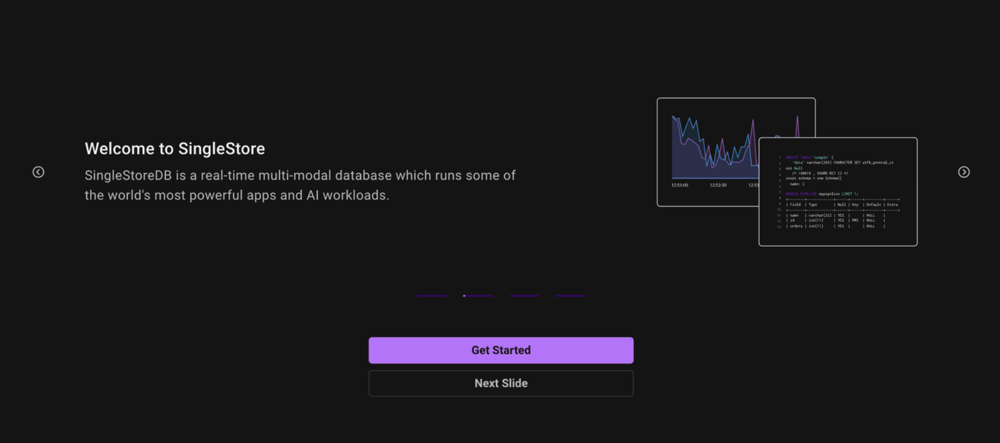
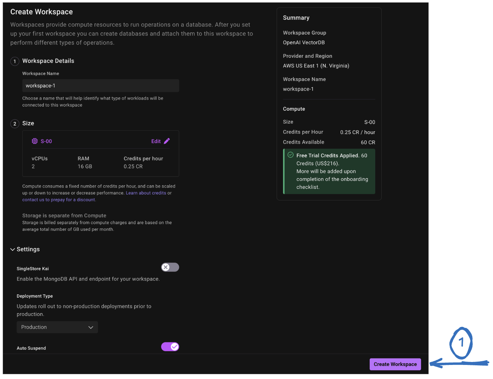
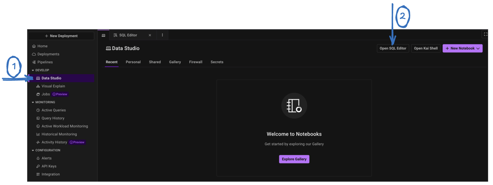
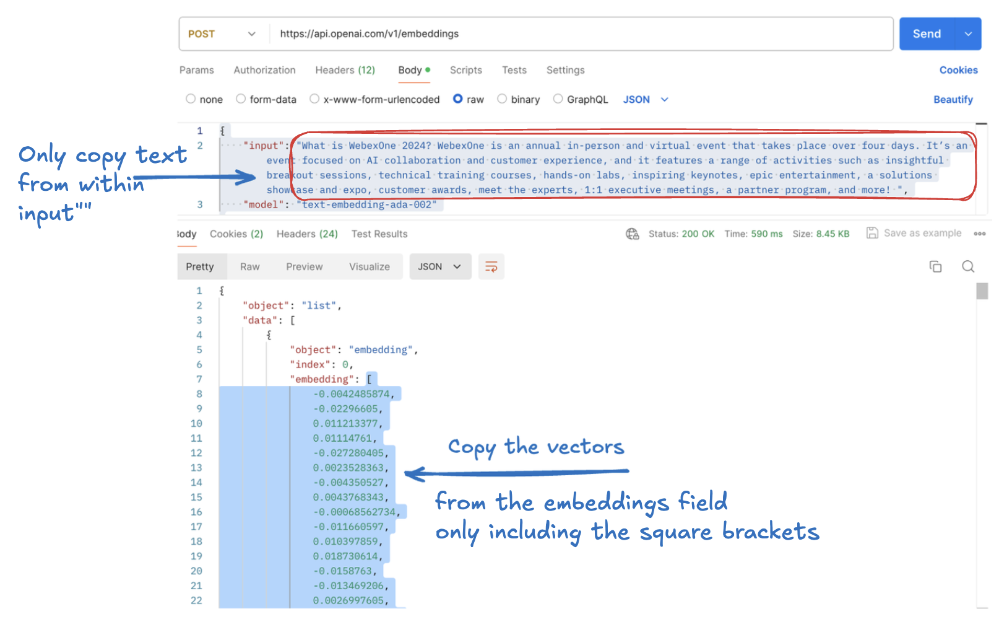

Task 4: Embeddings and Vector Database
- Vector databases are specialized databases designed to store content like PDFs, blogs, Word documents, images, audio files, and videos as embedding vectors. This enables semantic-based retrieval, meaning the database can understand the meaning and context of the stored data, allowing for more accurate and relevant search results beyond simple keyword matching.
- In the process of a large language model, embedding is generally the first step to convert discrete tokens (like words or subwords) into dense vector representations, which will allow the rest of the network to do the math necessary to predict the next word.Embeddings and vector databases are essential if you are building any kind of AI product.
What are embeddings?
Embeddings are basically data which are converted into array of numbers called vectors that contain pattern of relationship, and can be used for similarity search.
Let's explain this concept using a 2D graph. In this graph, words like "Webex" and "collaboration" are often used in similar contexts, so their embeddings—essentially vector representations—are positioned close to each other. These vectors are numerical arrays that computers can easily interpret.
The advantage of using vectors is that we can find similar items by calculating the distances between their vectors, a process known as nearest neighbor search. However, simply storing these embeddings isn't enough. Performing queries across thousands of vectors can be incredibly slow. To overcome this, the vectors need to be indexed in the vector database.
Note: In reality vectors can have hundred of dimensions

Similarly, images are also broken into vectors, which are arrays of numbers that machines can process. Once these embeddings (both for words and images) are generated, they are stored in a specialized database known as a vector database.
There are numerous embedding models available, such as Google's Word2Vec, CLIP (Contrastive Language–Image Pretraining), and even those provided by OpenAI, which offer excellent capabilities for generating embeddings. However, the challenge is that these models don't include tools for storing and managing those embeddings. This is where vector databases become essential.
Note: In this lab session, we will be using OpenAI embeddings. More info can be found here
Why use vector databases when we have relational databases?
Around 80% of the data we encounter is unstructured, including social media posts, images, and videos. This type of data doesn’t easily fit into traditional relational databases, which is where vector databases come into play.
Understanding the workings of Embeddings and Vector Databases
Practical Example of Embedding Techniques Using Postman
Set OpenAI token
Note: If you’ve already obtained the token in previous steps or section, you can skip this section
Note: First, create an account from the OpenAI official website.
- Create a new project API key by browsing to API Keys web page. Select Create new secret key. The API key is automatically generated. Save the APi Key as we will be using it in the later steps .

Note: We will use the OpenAI key in Postman to generate embeddings.
Login to Postman
If you haven't installed Postman on your machine yet, you can download it from the following link
We will use embedding APIs to create an embedding vector that represents our input text, more information can be found at the following link
The POST request we will be using:
https://api.openai.com/v1/embeddings
- Click on the Headers tab and enter the Following creds
Authorization: Bearer <replace with your openAi API key>
Content-Type : application/json
Note: Ensure there is a space between "Bearer" and your OpenAI API key.
In this lab, we will be using the text-embedding-ada-002 model, but feel free to use any other embedding model of your choice.
- In Postman, click on the "Body" tab, select RAW and enter the following information, and then press Send.
{
"input": "What is WebexOne 2024? WebexOne is an annual in-person and virtual event that takes place over four days. It’s an event focused on AI collaboration and customer experience, and it features a range of activities such as insightful breakout sessions, technical training courses, hands-on labs, inspiring keynotes, epic entertainment, a solutions showcase and expo, customer awards, meet the experts, 1:1 executive meetings, a partner program, and more! ",
"model": "text-embedding-ada-002"
}
- You will receive a 200 OK message, confirming success. You'll notice that our text has been converted into embeddings (vectors). In the upcoming steps, we will learn how to manually save this information in a vector database.
Note:Text embedding models convert text into numerical data (embeddings) that represent the meaning of the text.
Inserting values in Vector Database
We have a variety of databases available. In the upcoming step, let's demonstrate how to use SingleStore as a vector database and save our embeddings there.
Note: This manual step is simply to illustrate how embeddings are stored in vector databases.
Note: We will create a Free account on SingleStore since it provides some credits to set up a trial account.
- I’m choosing to create an account using Google, but feel free to use any other method that works for you.

- Select Continue


- Click on New Deployment
- Give your workspace a name, keep all other settings at their default, and click "Next."
- Then, leave everything as is and click on "Create Workspace."

- Now we can create a database
- Click on Database tab
- Return to the home screen and navigate to Develop > Data Studio. Open the SQL Editor.

- Be sure to select your workspace and database.
- Run this SQL command to create a table - Press Run
Note: If your lab remains inactive for 20 minutes, the SingleStore database will automatically "pause" or go dormant. When this happens, you’ll need to return to the homepage, click “resume,” and the workspace will be ready again in a few minutes.
create table if not exists myvectortable (
text TEXT,
vector BLOB
);
- You can navigate to the Databases tab and verify that the table has been created.
-
Let's copy the embeddings we generated earlier using Postman so that we can insert them into our database.
-
To proceed, copy the input text and all the embedding values, including the square brackets [], as shown in the image. These will be used for insertion into our database.

- Let's head back to our SQL editor and insert the values into our database. Once done press "Run"
Note: You can reuse the same SQL editor block, remove the previous command, and run the following one.
insert into myvectortable (text ,vector) values ("your_input_text", JSON_ARRAY_PACK("your_embeddings"))
* Replace "your_input_text" with the input values from Postman.
* Replace your_embeddings with the embeddings you copied earlier, including the square brackets [].
insert into myvectortable (text ,vector) values ("What is WebexOne 2024? WebexOne is an annual in-person and virtual event that takes place over four days. It’s an event focused on AI collaboration and customer experience, and it features a range of activities such as insightful breakout sessions, technical training courses, hands-on labs, inspiring keynotes, epic entertainment, a solutions showcase and expo, customer awards, meet the experts, 1:1 executive meetings, a partner program, and more!", JSON_ARRAY_PACK("[
-0.0042485874,
-0.02296605,
0.011213377,
0.01114761,
-0.027280405,
0.0023528363,
-0.004350527,
0.0043768343,
-0.00068562734,
-0.011660597,
0.010397859,
0.018730614,
-0.0158763,
-0.013469206,
0.0026997605,
-0.00003768792,
0.014850326,
-0.03183152,
0.0026175508,
-0.0459321,
-0.0055803815,
-0.008247258,
-0.011713211,
0.0006169824,
-0.017112732,
-0.002885554,
-0.004113764,
-0.01348236,
........
]"))
- After running the above command, you will see that our table now contains both the input text and the corresponding embeddings.
Retrieving Values from the Vector Database
- Searching the vector database is quite simple. Example: we want to find information related to WebexOne. To do this, we'll create embeddings for our query, "Is WebexOne an annual event?" and then search the vector database to find matches against the existing embeddings.
1 | |
- Let's open Postman and create an embedding for our question. Be sure to click on "Send."
- Let's head over to the SQL editor and run a query for our search.
select text,dot_product(vector,JSON_ARRAY_PACK("[your_embeddings]")) as score
from myvectortable
order by score desc
limit 5;
select text,dot_product(vector,JSON_ARRAY_PACK("[
-0.0015118581,
-0.021267666,
0.023597047,
-0.0072638104,
-0.02286653,
0.005909599,
-0.026119394,
-0.010268575,
0.0052169873,
-0.009551842,
0.024065679,
0.020178782,
0.015464887,
0.016815653,
-0.016333235,
-0.0006641838,
0.018069934,
-0.010564916,
0.007911626,
-0.026367495,
-0.0019417254,
-0.005547787,
-0.012604848,
0.0003715036,
-0.013962504,
0.011729606,
-0.00078737224,
-0.011881223,
0.007815143,
0.009992908,
0.020316616,
-0.0032580325,
-0.0066401153,
0.0097310245,
-0.0028652078,
-0.008145943,
-0.0074843434,
........
]")) as score
from myvectortable
order by score desc
limit 5;
Note: You’ll be able to see the success of the vector database—higher scores indicate better matches for the answer.
Conclusion
In summary, vector databases allow LLMs to have long-term memory. In this section, we explored how to use embeddings and vector databases by generating embeddings with the OpenAI API through Postman. After setting up a free SingleStore account, embeddings were stored in a vector database. The process included creating an embedding for a query, searching the database, and confirming that it effectively retrieved relevant information. This demonstrated how vector databases can efficiently manage and query embeddings, making it easier to find relevant information based on the data stored.